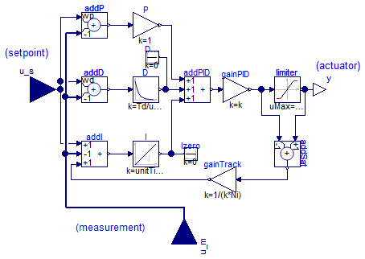
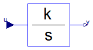
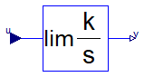
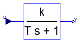
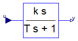

Modelica.Blocks.Continuous.LimPID
Modelica.Blocks.Continuous.LimPID
Modelica.Blocks.Continuous.LimPID
Modelica.Blocks.Continuous.LimPID
P, PI, PD, and PID controller with limited output, anti-windup compensation and setpoint weighting

Via parameter controllerType either P, PI, PD, or PID can be selected. If, e.g., PI is selected, all components belonging to the D-part are removed from the block (via conditional declarations). The example model Modelica.Blocks.Examples.PID_Controller demonstrates the usage of this controller. Several practical aspects of PID controller design are incorporated according to chapter 3 of the book:
Besides the additive proportional, integral and derivative part of this controller, the following features are present:
The parameters of the controller can be manually adjusted by performing simulations of the closed loop system (= controller + plant connected together) and using the following strategy:
Initialization
This block can be initialized in different ways controlled by parameter initType. The possible values of initType are defined in Modelica.Blocks.Types.InitPID. This type is identical to Types.Init, with the only exception that the additional option DoNotUse_InitialIntegratorState is added for backward compatibility reasons (= integrator is initialized with InitialState whereas differential part is initialized with NoInit which was the initialization in version 2.2 of the Modelica standard library).
Based on the setting of initType, the integrator (I) and derivative (D) blocks inside the PID controller are initialized according to the following table:
| initType | I.initType | D.initType |
| NoInit | NoInit | NoInit |
| SteadyState | SteadyState | SteadyState |
| InitialState | InitialState | InitialState |
| InitialOutput and initial equation: y = y_start |
NoInit | SteadyState |
| DoNotUse_InitialIntegratorState | InitialState | NoInit |
In many cases, the most useful initial condition is SteadyState because initial transients are then no longer present. If initType = InitPID.SteadyState, then in some cases difficulties might occur. The reason is the equation of the integrator:
der(y) = k*u;
The steady state equation "der(x)=0" leads to the condition that the input u to the integrator is zero. If the input u is already (directly or indirectly) defined by another initial condition, then the initialization problem is singular (has none or infinitely many solutions). This situation occurs often for mechanical systems, where, e.g., u = desiredSpeed - measuredSpeed and since speed is both a state and a derivative, it is natural to initialize it with zero. As sketched this is, however, not possible. The solution is to not initialize u_m or the variable that is used to compute u_m by an algebraic equation.
If parameter limitAtInit = false, the limits at the output of this controller block are removed from the initialization problem which leads to a much simpler equation system. After initialization has been performed, it is checked via an assert whether the output is in the defined limits. For backward compatibility reasons limitAtInit = true. In most cases it is best to use limitAtInit = false.
Extends from Interfaces.SVcontrol (Single-Variable continuous controller).
| Type | Name | Default | Description |
|---|---|---|---|
| SimpleController | controllerType | .Modelica.Blocks.Types.Simpl... | Type of controller |
| Real | k | 1 | Gain of controller [1] |
| Time | Ti | 0.5 | Time constant of Integrator block [s] |
| Time | Td | 0.1 | Time constant of Derivative block [s] |
| Real | yMax | Upper limit of output | |
| Real | yMin | -yMax | Lower limit of output |
| Real | wp | 1 | Set-point weight for Proportional block (0..1) |
| Real | wd | 0 | Set-point weight for Derivative block (0..1) |
| Real | Ni | 0.9 | Ni*Ti is time constant of anti-windup compensation |
| Real | Nd | 10 | The higher Nd, the more ideal the derivative block |
| Initialization | |||
| InitPID | initType | .Modelica.Blocks.Types.InitP... | Type of initialization (1: no init, 2: steady state, 3: initial state, 4: initial output) |
| Boolean | limitsAtInit | true | = false, if limits are ignored during initialization |
| Real | xi_start | 0 | Initial or guess value value for integrator output (= integrator state) |
| Real | xd_start | 0 | Initial or guess value for state of derivative block |
| Real | y_start | 0 | Initial value of output |
| Advanced | |||
| Boolean | strict | false | = true, if strict limits with noEvent(..) |
| Type | Name | Description |
|---|---|---|
| input RealInput | u_s | Connector of setpoint input signal |
| input RealInput | u_m | Connector of measurement input signal |
| output RealOutput | y | Connector of actuator output signal |
 Modelica.Blocks.Continuous.Integrator
Modelica.Blocks.Continuous.Integrator
Output the integral of the input signal

This blocks computes output y (element-wise) as integral of the input u multiplied with the gain k:
k
y = - u
s
It might be difficult to initialize the integrator in steady state. This is discussed in the description of package Continuous.
Extends from Interfaces.SISO (Single Input Single Output continuous control block).
| Type | Name | Default | Description |
|---|---|---|---|
| Real | k | 1 | Integrator gain [1] |
| Initialization | |||
| Init | initType | Modelica.Blocks.Types.Init.I... | Type of initialization (1: no init, 2: steady state, 3,4: initial output) |
| Real | y_start | 0 | Initial or guess value of output (= state) |
| RealOutput | y.start | y_start | Connector of Real output signal |
| Type | Name | Description |
|---|---|---|
| input RealInput | u | Connector of Real input signal |
 Modelica.Blocks.Continuous.LimIntegrator
Modelica.Blocks.Continuous.LimIntegrator
Integrator with limited value of the output

This blocks computes y (element-wise) as integral of the input u multiplied with the gain k. If the integral reaches a given upper or lower limit and the input will drive the integral outside of this bound, the integration is halted and only restarted if the input drives the integral away from the bounds.
It might be difficult to initialize the integrator in steady state. This is discussed in the description of package Continuous.
If parameter limitAtInit = false, the limits of the integrator are removed from the initialization problem which leads to a much simpler equation system. After initialization has been performed, it is checked via an assert whether the output is in the defined limits. For backward compatibility reasons limitAtInit = true. In most cases it is best to use limitAtInit = false.
Extends from Interfaces.SISO (Single Input Single Output continuous control block).
| Type | Name | Default | Description |
|---|---|---|---|
| Real | k | 1 | Integrator gain [1] |
| Real | outMax | Upper limit of output | |
| Real | outMin | -outMax | Lower limit of output |
| Initialization | |||
| Init | initType | Modelica.Blocks.Types.Init.I... | Type of initialization (1: no init, 2: steady state, 3/4: initial output) |
| Boolean | limitsAtInit | true | = false, if limits are ignored during initialization (i.e., der(y)=k*u) |
| Real | y_start | 0 | Initial or guess value of output (must be in the limits outMin .. outMax) |
| RealOutput | y.start | y_start | Connector of Real output signal |
| Advanced | |||
| Boolean | strict | false | = true, if strict limits with noEvent(..) |
| Type | Name | Description |
|---|---|---|
| input RealInput | u | Connector of Real input signal |
 Modelica.Blocks.Continuous.FirstOrder
Modelica.Blocks.Continuous.FirstOrder
First order transfer function block (= 1 pole)

This blocks defines the transfer function between the input u and the output y (element-wise) as first order system:
k
y = ------------ * u
T * s + 1
If you would like to be able to change easily between different
transfer functions (FirstOrder, SecondOrder, ... ) by changing
parameters, use the general block TransferFunction instead
and model a first order SISO system with parameters
b = {k}, a = {T, 1}.
Example:
parameter: k = 0.3, T = 0.4
results in:
0.3
y = ----------- * u
0.4 s + 1.0
Extends from Interfaces.SISO (Single Input Single Output continuous control block).
| Type | Name | Default | Description |
|---|---|---|---|
| Real | k | 1 | Gain [1] |
| Time | T | Time Constant [s] | |
| Initialization | |||
| Init | initType | Modelica.Blocks.Types.Init.N... | Type of initialization (1: no init, 2: steady state, 3/4: initial output) |
| Real | y_start | 0 | Initial or guess value of output (= state) |
| RealOutput | y.start | y_start | Connector of Real output signal |
| Type | Name | Description |
|---|---|---|
| input RealInput | u | Connector of Real input signal |
 Modelica.Blocks.Continuous.Derivative
Modelica.Blocks.Continuous.Derivative
Approximated derivative block

This blocks defines the transfer function between the input u and the output y (element-wise) as approximated derivative:
k * s
y = ------------ * u
T * s + 1
If you would like to be able to change easily between different
transfer functions (FirstOrder, SecondOrder, ... ) by changing
parameters, use the general block TransferFunction instead
and model a derivative block with parameters
b = {k,0}, a = {T, 1}.
If k=0, the block reduces to y=0.
Extends from Interfaces.SISO (Single Input Single Output continuous control block).
| Type | Name | Default | Description |
|---|---|---|---|
| Real | k | 1 | Gains [1] |
| Time | T | 0.01 | Time constants (T>0 required; T=0 is ideal derivative block) [s] |
| Initialization | |||
| Init | initType | Modelica.Blocks.Types.Init.N... | Type of initialization (1: no init, 2: steady state, 3: initial state, 4: initial output) |
| Real | x_start | 0 | Initial or guess value of state |
| Real | y_start | 0 | Initial value of output (= state) |
| Type | Name | Description |
|---|---|---|
| input RealInput | u | Connector of Real input signal |
| output RealOutput | y | Connector of Real output signal |